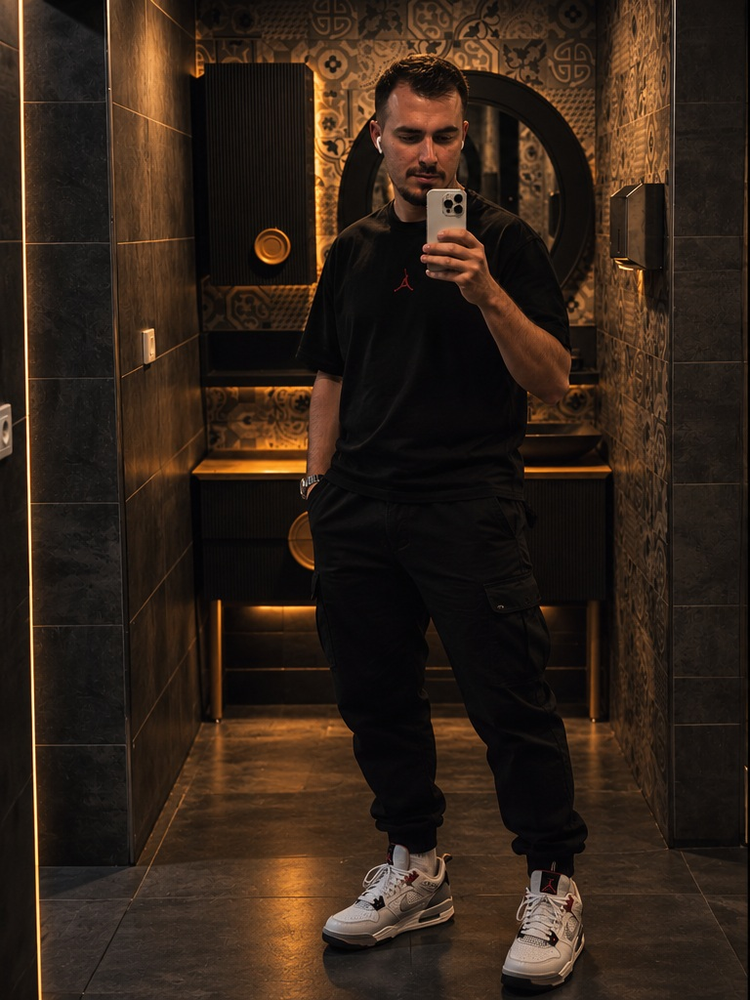

Yeni cihazlar, bilgisayarlar, dijital dünya ve “bunu nasıl yapabiliriz?” sorusu.
⌘Bir hayat.
Bir iz.
Teknolojiyle meraklanan, müzikle enerji bulan, yazarak düşünen ve yola çıktığında yeni hikâyeler toplayan kişisel arşiv.
OĞUZHAN
ŞANALAN
ŞANALAN
SCROLL TO EXPLOREISTANBUL / TR
01 / HİKÂYE
Benim için hayat, detaylarda.
26 Haziran 1997 doğumlu Oğuzhan Şanalan. Bilgisayarlar ve teknoloji dünyası ilgisini çekiyor; müzikte özellikle rap dinliyor, yazmayı seviyor ve fırsat buldukça yeni yerler keşfediyor.
Bu site bir CV değil. Daha çok bana benzeyen şeylerin toplandığı bir dijital alan: fotoğraflar, fikirler, şehirler, sesler ve zaman içinde değişen ben.
1997başlangıç
TECHmerak
RAPritim
TRAVELhareket
02 / DÜNYA
Rap başta olmak üzere ruh haline göre değişen sesler ve keşifler.
♪Düşünceleri kelimelere dönüştürmek ve bir şeyi kendi cümlemle anlatmak.
✎Şehirler, sokaklar, gün batımları ve planlanmamış rotalar.
↗03 / TEKNOLOJİ RADARI
Yeni telefonlar.
Yeni bilgisayarlar.
Güncel modelleri, ürün görsellerini, temel teknik özellikleri ve Türkiye fiyatlarını tek yerde gör. Kartlardaki görseller cihazı hızlıca tanımanı sağlar; veri tarafı desteklenen hostinglerde otomatik olarak yenilenir.
Güncel veri yükleniyor…
Son kontrol: —
Fiyat notu: Fiyatlar Türkiye içindir; kampanya, stok ve konfigürasyona göre değişebilir. Otomatik yenileme: sayfa açılışında ve yaklaşık 6 saatte bir.

STYLE STUDY / 2026
Şehrin içinde.
Şehrin içinde.
Kendi çizgisinde.
Yeni görsel dili sitenin karakteriyle birleştirildi: daha iyi kıyafet seçimi, daha güçlü duruş, koyu tonlar ve sıcak sinematik ışık.
04 / ARŞİV
Buradaki görseller yüklediğin fotoğraflardan ve yeni oluşturduğumuz sinematik çalışmalardan oluşuyor. Instagram profilin de doğrudan bağlı.


INSTAGRAM / @OGUZHN_SNL
Güncel fotoğraflar
Güncel fotoğraflar
oradan devam ediyor.
Profilime geç, yeni fotoğrafları ve günlük paylaşımları gör.
OŞ
@oguzhn_snl
“
Herkesin baktığı yere değil,
kendi gördüğüm yere bakarım.
06 / SOUNDTRACK
OĞUZHAN'IN MÜZİK DÜNYASI
Bu sitenin
Bu sitenin
bir sesi var.
Genel olarak rap dinlediğini baz alarak siteye ayrı bir soundtrack alanı ekledim. Ana seçim: Wegh.
YOUTUBE'DA AÇ ↗NOW / WEgh01
07 / WEGH ARŞİVİ
Rap tarafımın
favori dünyası.
Wegh için geniş bir müzik arşivi ekledim. Parçalar yılları ve yayın türleriyle listeleniyor; her satırdan YouTube araması açılabiliyor.


IntroCURCUNA · 2026
YOUTUBE ↗
Tütün ve VotkaCURCUNA · 2026
YOUTUBE ↗
Geri VerCURCUNA · 2026
YOUTUBE ↗
Radikal Eşkiya (feat. Şehinşah)CURCUNA · 2026
YOUTUBE ↗
BalbiberCURCUNA · 2026
YOUTUBE ↗
Daha Çok VarCURCUNA · 2026
YOUTUBE ↗
Halef SelefCURCUNA · 2026
YOUTUBE ↗
ŞSSCURCUNA · 2026
YOUTUBE ↗
OutroCURCUNA · 2026
YOUTUBE ↗
TuzakSingle · 2026
YOUTUBE ↗
Geri VerSingle · 2025/2026
YOUTUBE ↗
Güldüğün GünSingle · 2025
YOUTUBE ↗
16-24Single · 2025
YOUTUBE ↗
Yanlışlarla KarşılaştımSingle · 2025
YOUTUBE ↗
Göz Ucuyla (feat. Reynmen)Single · 2025
YOUTUBE ↗
Tütün ve VotkaSingle · 2025
YOUTUBE ↗
55-53 (Keskin & Wegh)Single · 2025
YOUTUBE ↗
kum saatiSingle · 2025
YOUTUBE ↗
Karardı BulutlarSingle · 2024
YOUTUBE ↗
aqSingle · 2024
YOUTUBE ↗
Sana Vuruldum (Ulubatlı Hasan)Single · 2024
YOUTUBE ↗
Kennedy'i Ben VurdumSingle · 2024
YOUTUBE ↗
AM2TERDAMCollab · 2024
YOUTUBE ↗
9mmCollab · 2024
YOUTUBE ↗
Yağsın Dünya ÜstümeSingle · 2023
YOUTUBE ↗
Çöp ŞişSingle · 2023
YOUTUBE ↗
Çok İnsan AffettimSingle · 2023
YOUTUBE ↗
RUMİ MADAFAKASingle · 2023
YOUTUBE ↗
Bu Ben OlmamakSingle · 2023
YOUTUBE ↗
GalactusEP · 2023
YOUTUBE ↗
Halit AbiSingle · 2023
YOUTUBE ↗
MaskaraSingle · 2023
YOUTUBE ↗
Kin (feat. Critical)Single · 2023
YOUTUBE ↗
Toz DumanSingle · 2022
YOUTUBE ↗
PringlesSingle · 2022
YOUTUBE ↗
Senin OlamamSingle · 2022
YOUTUBE ↗
Amon RaEP · 2022
YOUTUBE ↗
DeparSingle · 2021
YOUTUBE ↗
P.U.T.A.Single · 2021
YOUTUBE ↗
Canım İstediSingle · 2021
YOUTUBE ↗
PardonSingle · 2021
YOUTUBE ↗
01 / OĞUZHAN
Benim dünyam.
Merak, müzik, teknoloji, yazı ve yolculuklar etrafında şekillenen kişisel bir arşiv.
Teknoloji & Bilgisayar
Bilgisayarlar ve teknoloji dünyası ilgimin merkezinde. Yeni şeyler keşfetmek, kurcalamak ve dijital dünyayı yakından takip etmek benim için doğal bir merak.
Müzik
Özellikle rap dinliyorum. Wegh arşivi bu sitenin müzik tarafının önemli bir parçası; soundtrack olarak da Noma — Sabah Beş yer alıyor.
Yazmak
Yazıyla ilgileniyorum. Düşünceleri kelimelere dökmek, fikirleri saklamak ve kişisel arşiv oluşturmak benim için ayrı bir alan.
Seyahat & Keşif
Yeni yerler görmek ve yolda yeni hikâyeler toplamak hoşuma gidiyor. Şehir, gece ve sokak atmosferi görsel dünyamda da kendini gösteriyor.
Görsel Tarz
Koyu, sinematik, siyah ve antrasit tonlar; kontrollü kırmızı vurgular; güçlü ışık-gölge ve modern şehir estetiği.
Kişisel Arşiv
Fotoğraflar, müzikler, fikirler ve oluşturduğumuz görsel çalışmalar burada tek bir dijital hikâyede birleşiyor.
02 / KISA BİLGİ
Oğuzhan, özetle.
26.06.1997Doğum tarihi
TECHBilgisayar & teknoloji merakı
RAPMüzik dünyasındaki ana damar
WRITEYazıyla ilgileniyor
TRAVELYeni yerler & keşif
08 / İLETİŞİM